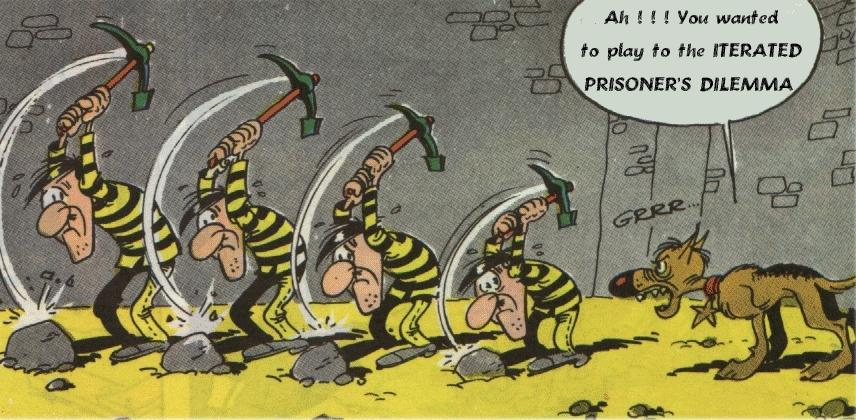

Figura 3: ilustración gráfica de la existencia de puntos de equilibrio
Software Libre: una aproximación desde la Teoría de Juegos
Juan Antonio Martínez
e-mail: jantonio@dit.upm.es
***** ENTRADILLA******
El software libre está de moda. Conferencias, ensayos y estudios matemáticos se presentan todos los días para hablar de las bondades de este "nuevo estilo" de hacer software. En este artículo se propone un nuevo enfoque del tema, mediante una modelo sociológico conocido por el nombre de "Teoría de Juegos"
***** PRESENTACION *****
El tema del Software Libre es objeto de un amplio estudio. Conferencias, ensayos, simulaciones.. Para la elaboración de dichos estudios, se utilizan diversas herramientas del campo de las Matemáticas, Sociología, y Gestión Empresarial. Vamos a analizar el fenómeno mediante una herramienta conocida como "Teoría de Juegos" caracterizada por su simplicidad y, sobre todo, porque puede ser "simulada" mediante diversos programas, con los que ilustraremos el artículo

Introducción
Lo primero es definir el concepto de "Teoría de Juegos". No es , como a primera vista pudiera pensarse una metodología para el diseño y construcción de juegos, sino una herramienta matemática para modelizar de forma sencilla las interrelaciones entre dos o más participantes en una relación.
La Teoría de Juegos parte de una serie de supuestos:
Los participantes en la relación son conscientes de ésta, buscan el máximo provecho de dicha relación y actuan racionalmente
Existe un coste de la relación y se obtiene un beneficio de ella. Coste y Beneficio son cantidades mensurables
Las transacciones se efectuan mediante los denominados "turnos de juego" , en los que todos a la vez realizan su selección. En principio no podemos saber a priori cual va a ser la elección del contrincante, sino solo suponer que escogerá la opción Optima para él
Las "partidas" pueden ser a una sola vuelta ( un único turno ) o iterativas ( múltiples turnos ). Del mismo modo, pueden ser entre dos personas ( caso habitual ), o entre grupos de personas, en cuyo caso suponemos que se juega "todos contra todos" ( aunque posteriormente puedan surgir diversos tipos de alianzas )
El objetivo de la Teoría de juegos es el análisis de estas relaciónes y la búsqueda de un modelo de actuación optimo para todos los casos
|
el objeto de la teoría de juegos es el análisis de las interrelaciones entre dos o más individuos, y la búsqueda de un modelo de actuación óptimo |
Desde estas presunciones, podemos considerar el modelo de desarrollo del Software Libre como sujeto de análisis con esta metodología. Los lectores pueden objetar que en la práctica estos supuestos no son de sencilla aplicación: las personas no siempre actuan racionalmente, la búsqueda del beneficio máximo no es siempre el objetivo, es dificil mensurar el "beneficio" de la satisfacción personal...No obstante, la Sociología demuestra que si bien a nivel personal, estos supuestos no siempre se cumplen, a nivel empresarial, de grupos u organizaciones - incluso las autodenominadas "altruístas" - tienden a comportarse así
Un primer ejemplo, que ilustra los problemas típicos que trata la Teoría de Juegos: El problema del reparto equitativo. En esencia se trata de conseguir que un grupo de personas se sientan contentos con la parte que les haya tocado en un reparto. La modelización de este problema presupone que a todo el mundo le gustaría que le tocara el 100% de la cantidad total a repartir, y que se sentirá a disgusto si considera que alguien tiene más que él.
El problema, así planteado, y para el caso de dos personas, se conoce como el "reparto del pastel". En el caso de dos personas, se describe como "¿Cómo deben repartirse dos personas una tarta, de manera que ninguno considere que tiene menos que el otro?. La respuesta es sencilla: El primero debe partir la tarta, y el segundo escoger el pedazo que prefiera. Evidentemente, el primer jugador hará lo posible por que la partición sea lo más equitativa posible, pues en caso contrario, sabe que se quedará con el trozo menor.... El problema es generalizable a n personas y m tartas, y existen demostraciones de reparto óptimo para cada caso.
Este ejemplo, si bien lejano al caso del Software Libre es ilustrativo de cómo se puede estudiar matemáticamente una interrelación entre dos o más individuos en casos concretos. Para acercarnos más al caso que nos interesa vamos a analizar los elementos que intervienen en el proceso de desarrollo de este Software.
En el universo del desarrollo de software libre, tenemos los siguientes participantes:
Empresa
Coordinadores de proyecto
Programadores
Voluntarios
Usuarios
Clientes
InterNet
Cada uno de ellos relaciona con los demás, teniendo en dicha relación una serie de costes, y recibiendo por ello unos beneficios. Estos beneficios pueden ser económicos, morales, de obtención de recursos, de prestigio... en cualquier caso algo por lo que merece la pena moverse. Por el contrario, para obtenerlos es necesario un gasto: teléfono, perdida de control del software, dispersión de clientela, tiempo, dinero... Como hemos dicho antes, tanto los beneficios como los costes son difícilmente cuantificables, por lo que tendremos que hacer diversas aproximaciones
De lo que se trata a efectos del modelo, es que se ofrece una opción de intercambio. Cada uno puede o no ofrecer algo al otro, y el otro puede o no recibirlo, dejando a su vez o no algo a cambio.
En sociología esto se conoce por el nombre de Modelo de Cooperación Egoísta: cuando dos o más personas interrelacionan para obtener algo a cambio. Se denomina "egoista" porque se presupone que cada participante busca el interés propio, o a lo sumo el interés común, no el interés del otro.
Utilizaremos a partir de ahora los conceptos de "Altruísmo" y "Egoísmo" en un sentido sociológico, no moral
|
Cooperar o no cooperar, he aquí el dilema |
Vamos a ponernos en el caso de uno de los participantes: Yo tengo acceso a un producto (software), y tengo dos opciones: cogerlo o dejarlo. En el primer caso puedo dar algo a cambio, o no. En el caso del software propietario, el dar algo a cambio, significa pagar por la licencia de utilización, o bien ser un "pirata". En el caso del software libre, significa contribuír al futuro de dicho software, o bien quedármelo "sin más".
Nótese, que en cualquiera de los casos, el ofrecimiento que me hacen del producto puede ser aceptado o no, y retribuído o no. La decisión es mía. Yo, evidentemente busco el máximo beneficio para mí, y debo tener en cuenta las posibles consecuencias de mis actos. ¿qué es lo que debo hacer?
El Dilema del Prisionero
Tenemos ya todo lo necesario para entrar de lleno en la Teoría de Juegos, mediante el conocido "Dilema del Prisionero"
Dos atracadores han sido detenidos, estando cada uno aislado del otro en sendas salas de interrogatorio. El fiscal propone a cada uno de los presos un pacto: si delata a su compañero se librará de la cárcel.... siempre y cuando el compañero no le delate a él. Si ambos optan por permanecer callados la pena será de un año de prisión. En el caso de condena, la pena será de tres años.
Tanto A como B razonan que en el caso de permanecer callados no tienen posibilidad de librarse de la cárcel, luego la solución ideal es delatar al compañero... salvo que el compañero puede seguir el mismo razonamiento ¿Cúal es pues la decisión correcta?
Representando el problema en forma de tabla, obtenemos el siguiente diagrama:
|
Preso 1 |
Preso 2 |
Delata |
Calla |
|
Delata |
( 3 , 3 ) |
( 0 , 3 ) |
|
|
Calla |
( 3 , 0 ) |
( 1 , 1 ) |
|
La segunda variante del dilema del preso nos introduce de lleno en los modelos de cooperación:
Tenemos de nuevo dos atracadores, esta vez en libertad, que se dedican a la compraventa de productos robados. Los atracadores han pactado que uno de ellos deje la mercancía en un lugar determinado, mientras que el otro deja el dinero en otro lugar. Ambos atracadores se dirigen a recoger posteriormente el paquete destinado a cada uno...
Está claro que si uno de ellos deja un paquete vacío, y recoge a cambio un paquete lleno, ha obtenido un beneficio neto en la transacción. Por consiguiente ambos dejan sendos paquetes vacíos... y recogen paquetes vacíos. Pero ¿Y si en lugar de un único intercambio se realizan una serie de intercambios espaciados en el tiempo ? Si un ladrón traiciona al otro, es casi seguro que será traicionado en la siguiente transacción. ¿Cual es la estrategia ganadora?
Para complicar más las cosas, vamos a suponer que en lugar de dos atracadores tenemos n atracadores, interaccionando entre ellos por parejas: a cada turno el atracador m debe decidir qué es lo que va a hacer con cada uno de los demás atracadores, colaborar o traicionar
En el caso del software libre, la interrelación no se realiza por parejas, sino que es una relación de todos con todos, pero aún así podemos seguir utilizando el modelo
Realmente podríamos aplicar este análisis a cualquier tipo de transacción económica. ¿ En qué se diferencian unos modelos económicos de otros? En la estrategia de intercambio que utilizan cada uno. Un empresario sin escrúpulos, puede adoptar una postura "egoísta" ( recuérdese siempre que se habla en términos sociológicos, no morales ), y ofrecer sistemáticamente a cambio de dinero un software de calidad más que dudosa ( ¿ A qué nos suena ...? ). Un altruísta convencido, puede trabajar por amor al arte y ofrecer productos gratis, sin esperar nada a cambio... Por el otro lado, yo puedo escoger entre pagar o piratear, usar el software o contribuír a él....
En cualquier caso la estrategia que adoptemos condicionará futuras negociaciones. En el caso del software libre, la estrategia adoptada ( en teoría ) es la de colaboración: se acepta el producto, y a cambio se ofrecen mejoras, estudio, e incluso dinero.
|
Se han definido y estudiado múltiples estrategias de comportamiento. La más conocida se denomina "Ojo por ojo" |
En Teoría de Juegos se han definido y estudiado múltiples estrategias. Citemos como presentación alguna de ellas:
El Egoísta: Defrauda sistemáticamente
El Altruísta: Colabora siempre
El Loco: Colabora o defrauda de forma aleatoria
Entre las diversas estrategias conocidas destaca por su sencillez y efectividad la denominada "Tit for Tat", que podríamos traducir al castellano como "Ojo por ojo". Se puede resumir de la forma siguiente:
En el primer turno, el jugador colabora.
En el segundo y siguientes turnos, el jugador repite la jugada que le haya hecho el opnonente: colabora, si el otro colaboró y defrauda si el otro le defraudó
Esta estrategia, extremadamente simple es a la vez muy efectiva. En muchos concursos celebrados en Internet sobre simulaciones del "Dilema del Prisionero", esta estrategia ha resultado ganadora.
En el caso del software libre, podemos ver una similitud con esta estrategia: la gente empieza por poner su software a disposición del público ( colaboración inicial ), y recibe respuestas de éste en forma de contribuciones al desarrollo. En el caso de un oponente egoísta... se queda sin respuesta, pero también en cuanto se sepa que dicho oponente actúa con estrategias egoístas, se verá relegado de la comunidad de cooperantes.
Un Simulador para el dilema del prisionero
Antes de seguir con las implicaciones de esta modelización vamos a hacer algo práctico: montar un simulador para este modelo. El CD-Rom que acompaña a esta revista contiene dos programas, denominados "prison" y "jprison", que consituyen plataformas de simulación para el dilema del prisionero. El primero está escrito en C, y precisa para su ejecución de la librería OpenLook Xview, de la cual se ofrece en el CD-Rom el paquete en formato .rpm. El segundo, aunque menos potente, está escrito enteramente en java, con lo que podremos compilarlo y ejecutarlo en cualquier plataforma.
Ambos programas incluyen instrucciones para su compilación y ejecución. Del mismo modo, incorporan diveras estrategias predefinidas, y ofrecen la posibilidad de crear e integrar estrategias nuevas. La figura dos ilustra una imagen del programa "xprison", versión gráfica del primero de los paquetes incluídos ( este paquete ofrece también una versión en modo texto, que permite interacción con el correo electrónico, web, etc, para hacer simulaciones off-line )
Xprison es un emulador iterativo gráfico del dilema del preso. A cada turno se analizan los resultados, y en función de ellos se crea una "nueva generación de algoritmos". Dependiendo del beneficio obtenido, el programa tenderá a potenciar más hijos de los algoritmos más rentables, y a disminuír el número de algoritmos no rentables
|
|
|---|
|
Figura 1: El simulador Xprison |
Analicemos el programa: En la primera pantalla nos aparecen una serie de estrategias, de las cuales deberemos esoger las que queramos someter a análisis. Podemos escoger tanto el número de estrategias como la población inicial. Del mismo modo, podemos definir los grados de mutación, la intervención del azar en la nueva generación.... podemos asímismo cargar y guardar configuraciones, y por supuesto, ejecutar simulaciones
La segunda ventana corresponde a la del simulador. Podemos ver en forma de histogramas el resultado global de la simulación, avanzar paso a paso, cambiar las condiciones de ejecución. La representación visual puede conmutarse entre histograma o diagrama de "quesos", sirviendo éste último para ver el resultado final, o bien realizar trazas paso a paso.
Aparece un segundo gráfico, correspondiente al nivel de colaboración entre las diversas estrategias. Es curioso analizar como a medida que el número de iteraciones crece, crece el nivel de colaboración entre las diversas estrategias. Esto nos ilustra ya una la primera conclusión extraíble desde la Teoría de Juegos:
|
A corto plazo, las estrategias egoístas salen vencedoras |
"En condiciones normales, las estrategias egoístas son
beneficiosas a corto plazo, siendo las estrategias colaboradoras las
ganadoras a medio y largo plazo".
En lenguaje llano: "se
puede engañar a una persona siempre, o a todo el mundo una
vez, pero no se puede engañar siempre a todo el mundo"....
Fabricantes de software, Editoriales, Empresas de cine,
discográficas... etc, se enfrentan actualmente al problema de
la piratería y al descenso imparable de los beneficios de
ventas. A la luz de estos resultados es la reacción lógica
a todo un historial de abusos sobre los consumidores. En cambio, las
empresas de servicios, o el software libre se encuentran ante un
crecimiento de expectativas y de ventas imparable...
Realmente no tiene por qué ser así:Paul Rosemberg, en un reciente documento publicado en Internet ( incluído en el CD-Rom ) titulado "A Mathematical Analysis of the Bussines of Software", realiza un estudio matemático detallado de la evolución de las empresas y llega a la conclusión de que tanto el software libre como el software propietario pueden progresar indefinidamente si se cumplen una serie de requisitos. Es de lectura difícil, pero obligada para todos los interesados en el tema.
Estudio y simulación de diversas estrategias
Sigamos estudiando el modelo con el simulador. Para ello vamos a leer la documentación sobre las diversas estrategias, y a probar diversas configuraciones
La primera de ellas consiste en estudiar el algoritmo del "ojo por ojo". En casi todas las simulaciones, este algoritmo resulta, si no ganador, si de los primeros. Escojamos pues una población basada en una mayoría de algoritmos egoístas y una minoría de "ojo por ojo"...
|
Es precisa una "masa crítica" para que una estrategia colaboradora prospere |
En la figura hemos escogido 100 muestras de "Egoísta puro", frente a 7 muestras de "ojo por ojo". El resultado es deprimente: El algoritmo generoso no obtiene beneficio alguno, y acaba por desaparecer... es necesario que elevemos a 10 o más muestras de "ojo por ojo" para que muy despacio, los colaboradores sean capaces de pervivir y reproducirse. Tenemos aquí la segunda conclusión:
|
|
|
|---|---|
|
Figura 2: Representación gráfica del concepto de masa crítica |
|
"Condición indispensable para que una estrategia colaboradora perviva, es que exista un número de colaboradores suficiente para que se produzcan beneficios". Es la condición de "masa crítica" del Software Libre.
La aplicación al software es inmediata: Si bien el software libre ha existido desde los comienzos de la informática, solo con la popularización de Internet y la accesibilidad global a la red ha permitido que el software libre haya podido llegar a donde está hoy. Sólo la existencia de un gran número de colaboradores en el modelo garantiza su pervivencia
Probemos ahora otra combinación: ¿Qué pasaría si en lugar de enfrentar a nuestro colaborador egoísta con "los malos" lo enfrentamos con una estrategia "Altruísta". Probemos por ejemplo una proporción de 50% de cada población.. El resultado se puede preveer sin necesidad de efectuar simulación: ambas estrategias permanecen estables en el tiempo y el indicador de colaboración permanece en el 100 %. Esto ilustra un efecto sorprendente y que da lugar a multitud de discusiones sobre moral y sociología:
|
En condiciones normales, no hay diferencia entre el comportamiento Altruísta y una colaboración egoísta, cuando ambas estrategias se relacionan entre sí |
"Para un observador neutral, y en ausencia de otros datos más que los resultados obtenidos, es imposible distinguir una estrategia genuinamente altruísta de una de colaboración egoísta". Esto es: no hay diferencia entre el que es "bueno" del que busca su beneficio. Las implicaciones éticas de este resultado trascienden del ámbito de este artículo, pero baste hacer notar que en base a estos resultados muchos filósofos sostienen que los conceptos de "bueno" y "malo", no son tales, sino que el único concepto válido es el de "beneficioso o no". Existe la denominada "Etica de lo útil" que se apoya en que es posible el beneficio mutuo partiendo, no del altruísmo ( que algunos autores niegan ), sino del resultado de una cooperación egoísta. ( ver bibliografía en las referencias )
En las listas de correo sobre temas de software libre, se generan continuamente discusiones sobre el tema "trabajar gratis", "hacer las cosas con generosidad", etc. Para un observador imparcial, esta discusión carece de sentido: es como preguntar por las motivaciones de un voluntario en una ONG. De lo que se trata a efectos prácticos es del resultado: el software se realiza, y avanza.
No siempre la colaboración es plena: imaginemos el caso de una estrategia que se basa en colaborar sólo con determinadas estrategias. En Teoría de Juegos se conoce como el "Modelo del Colaborador Racista". ¿ Cual es el resultado de este modelo ?
Como en el simulador esta estrategia no está implementada, vamos a dar unas pautas para su diseño:
En una primera fase, el colaborador racista se comporta como secuencia, una firma de identificación, a la vez que intenta reconocer dicha firma en las demás estrategias que participan en el juego
En una segunda fase, la estrategia consiste en comportarse como altruísta con las estrategias "hermanas" y como egoísta con las demás
El resultado de esta estrategia depende de la proporción entre las diversas razas que participen en el juego. Si una raza es minoritaria se extinguirá. Si todas las razas tienen suficiente masa critica, se producen diversas posiciones de equilibrio, en que la población de cada raza permanece estable. No obstante el nivel de colaboración, como es obvio no llega nunca al 100% sino que corresponde a los porcentajes de población. Como corolario:
|
Es posible encontrar puntos de equilibrio en los que coexistan diversas estrategias |
"Es perfectamente posible que existan diversos puntos de equilibrio en los que la colaboración no es plena, pero la población permanece estable"
Los lectores rápidamente identificarán este ejemplo con un caso muy debatido en el mundo Linux: la "guerra" entre KDE y GNOME. Actualmente no parece que ninguno de estos dos proyectos vaya a superar al otro. Antes bien avanzan en paralelo, evolucionando y mejorando continuamente. La Teoría de Juegos postula la existencia de los denominados "Puntos de Equilibrio", en que no existe ninguna estrategia ganadora. Sin duda, los asistentes al II Congreso Hispalinux, celebrado los días 5 y 6 de Noviembre en la Universidad Carlos III de Madrid, recordarán la ponencia "Altruísmo, Eficiencia y Bienes Públicos", en la que Felipe Pérez nos expuso una demostración matemática de la existencia de puntos de equilibrio, en función de las diferencias de intereses entre los colaboradores. ( El CD-Rom que acompaña a esta revista, incluye una copia de dicha ponencia. Los interesados, pueden obtenerla también en el Web )
|
|
|---|
|
Figura 3: ilustración gráfica de la existencia de puntos de equilibrio |
Evidentemente, la estabilidad que presenta la simulación, en la vida real no es completa: La evolución normal consiste en el denominado efecto de "Diversificación": Dos empresas estables y que compiten por un mismo mercado, acaban, bien sucumbiendo alguna, o bien ocupando cada una un diferente nicho de mercado. Esta diversificación puede ser geográfica o de intereses. En el ejemplo de KDE y GNOME, parece ser que cada escritorio está siendo adoptado por dos tipos de usuario: el que busca un escritorio fácil de usar (KDE) o el que busca un escritorio potente (GNOME). Del mismo modo las empresas que distribuyen linux tienden a adoptar un escritorio u otro: diversificación de usuarios y de mercado. Por contra, las soluciones minoritarias, especialmente las basadas en código cerrado ( Motif, CDE... ) no alcanzan la masa crítica, y están desapareciendo rápidamente del mundo Linux
Estrategias avanzadas
Como más de un lector avezado podrá pensar, "ojo por ojo" no es la estrategia óptima. Ni siquiera es la que más se parece al modelo de desarrollo de Software Libre:
-En primer lugar, no sabe aprovecharse de las debilidades del oponente: ante una estrategia altruísta, la opción lógica consiste en aprovechar la "candidez" del oponente, defraudando de vez en cuando al contrario
-En segundo lugar no es suficientemente efectiva: ante "errores" del contrario, suele tender a una estrategia de no colaboración que redunda en la imposibilidad de obtener beneficios en posteriores turnos.
En el primer caso, el algoritmo intenta conseguir beneficios a partir de la garantía de que el oponente no le va a penalizar: La licencia GPL me permite hacer uso indiscriminado del software GPL, afectando solo a la redistribución. Yo como usuario no tengo ninguna obligación de contribuír al desarrollo de software GPL, aunque tengo todo el derecho a utilizarlo - siempre que respete los términos de la licencia -. Es la comunidad Linux la que se encargará de hacerme entrar en razón..
|
Las estrategias colaboradoras potencian la captación de nuevos colaboradores |
En el segundo caso, se trata de convencer a alguien que no colabora para que inicie la colaboración, a base de ofrecerle "regalos". En nuestro caso: regalarle una distribución de Linux... a este respecto, y puesto que hemos visto que la potencia y el futuro del Software Libre reside la cantidad de gente que participa, existe una tendencia natural al proselitismo entre los "adeptos" a Linux. No es casualidad la expresión "Comunidad Linux" .... con todas las connotaciones de secta y proselitismo que pueda conllevar. De hecho, como se ve en el simulador, la colaboración es un fenómeno que produce realimentación positiva. Nadie que disfrute de los beneficios del Software Libre puede dejar de intentar promocionarlo.
Dejamos al lector como ejercicio la expresión formal de esta estrategia, y su proyección en el simulador.
Resumen. Conclusiones
Hemos descrito los fundamentos de la Teoría de Juegos, su aplicación a las interrelaciones humanas, y al desarrollo del software libre. Mediante simulación, hemos descrito y explicado alguno de los efectos que vemos en el mundo del software libre. Quedan una serie de puntos que no podemos entrar aquí a describir:
No existen en la vida real estrategias definidas: las personas, y con ellas sus motivaciones, evolucionan con el tiempo. Para simular este comportamiento se precisa de herramientas más poderosas, que las descritas aquí
No hemos hecho un análisis del concepto de beneficio, ni de los métodos de cuantificación. En el CD-Rom que acompaña a la revista se incluyen ensayos de diferentes autores que realizan dicha cuantificación en base a las fuentes de costes y beneficios de cada uno de los participantes
Invitamos a los lectores a experimentar con el simulador. En las referencias se incluyen direcciones de páginas web donde se puede jugar "on-line", así como foros de discusión sobre la Teoría de juegos, el modelo de desarrollo del Software Libre, y diversos estudios matemáticos y sociológicos
Referencias
El CD-Rom que acompaña a la revista, incluye tanto el software descrito, como los artículos citados a continuaciónFelipe Perez: "Altruísmo, Eficiencia y Bienes Públicos". Resumenes de ponencias del Segundo Congreso Hispalinux. Madrid , 5 y 6 de Noviembre 1999
Paul Rosemberg: "A Mathematical Analysis of the Bussines of Software"
Juan Antonio Martínez: "La Empresa ante el Software Libre"
Eric S. Raymond: "The Magic Cauldron"
William Poundstone: "El dilema del prisionero". Alianza Editorial. ISBN 84-206-0747-9
Fernando Savater: "Etica como amor propio". Editorial Mondadori ISBN 84-397-0259-0
http://www.lifl.fr/ ( paginas web sobre Teoría de Juegos )
http://sobre.ati.es ( Grupo de Software Libre de la Asociación de Técnicos informáticos )